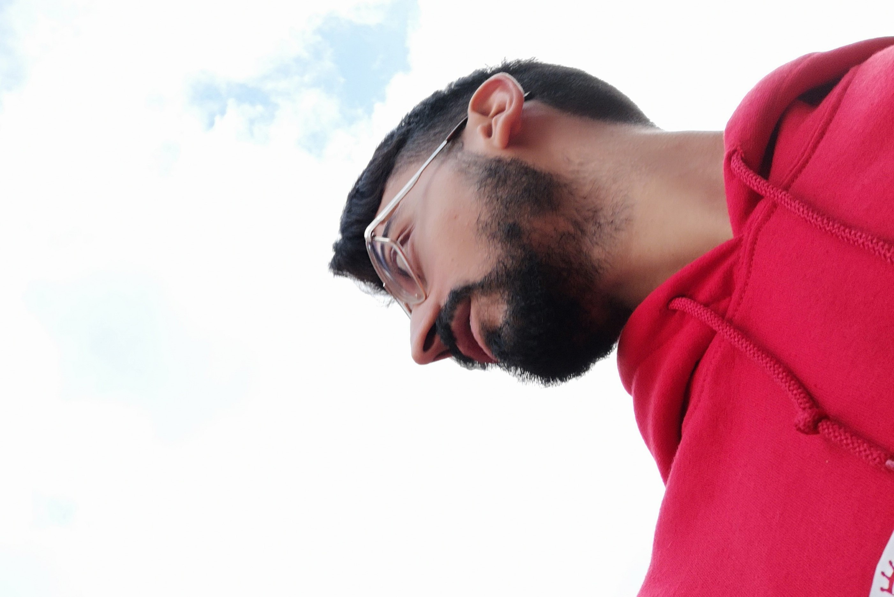

Situazione Attuale & Punti di Forza 💪
Al momento studio in Italia Ingegneria Informatica. Inizialmente non è stato così semplice;
l'approccio universitario britannico è più pratico, e paradossalmente avevo più dimestichezza nello studio in lingua inglese.
Tuttavia, posso dire che l'intero processo è estremamente impegnativo e gratificante di per sé! Lo trovo stimolante tanto quanto la mia
esperienza universitaria all'estero e l'abbinamento delle mie competenze linguistiche con l'informatica è ciò che darà una svolta alla mia carriera!!
A volte mi sembra addirittura di avere più di un motore con cui lavorare, a seconda del linguaggio che uso. Posso studiare/fare ricerca
sia in inglese che in italiano, e questo mi dà un grande vantaggio e mi rende più dinamico! Ho un ottimo equilibrio
tra le due lingue e lavoro sempre per mantenere questi motori quanto più scattanti! Per me si tratta tanto di passione quanto di determinazione!
Progetti e Obiettivi Futuri 

Vedo in Italia buone opportunità per un futuro gratificante nel mio settore, dove posso raggiungere la crescita e la soddisfazione personale.
Nel mondo dell'informatica non mi dispiacerebbero posizioni entry-level per progredire; sono interessatissimo allo sviluppo web.
I ruoli front-end potrebbero essere migliori per iniziare, ma il full-stack mi garba ugualmente. In questo momento vedo il lavoro come una priorità,
e una seconda laurea come un obiettivo che può ripagarmi sul lungo termine.
Scommetto che dal mio CV avrete notato che non sono una persona a cui piace stare con le mani in mano e adoro le sfide/opportunità
per salire di livello nella vita. Inoltre mi piace aggiornarmi e imparare
nuove competenze professionali! Apprendere cose nuove legate al web o al pc può essere molto utile anche nella vita quotidiana, ad esempio mi è già capitato
di aiutare amici con il loro sito Wordpress, ecc. Comunque, è qualcosa di buono che ti acuisce il cervello!
Missione di Sviluppo Web 🚀
Come ho accennato nel mio CV, mi piacciono tutti i tipi di linguaggi di programmazione, da quelli OS/processore allo sviluppo web! Il 1°
che ho imparato è il linguaggio C, è stato divertente e mi ha dato una buona base per imparare anche i linguaggi OOP come JAVA.
Di quest'ultimo apprezzo moltissimo la sua affidabilità/robustezza e l'indipendenza dalla piattaforma!
Un linguaggio che mi ha sorpreso per la sua facilità e potenza è JavaScript, che è anche molto versatile. Oltre a questo
trovo interessante il diverso utilizzo che se ne può fare grazie a vari framework, ambienti e librerie (es. vue.js, node.js ecc.).
E ovviamente ho buona familiarità con HTML e CSS, che compongono queste pagine! Sono abbastanza facili e diretti
come lingue, ma so che le cose possono diventare piuttosto complicate quando ci sono più variabili da tenere d'occhio!
Vedo questi ultimi due linguaggi, se considerati a sé stanti, come una questione di architettura e design, e lo trovo bellissimo!
Lascia spazio per creatività e per soddisfare le aspettative in una maniera artistica! In questo senso vedo lo sviluppo come la soluzione
ideale per entrare nel mondo dell'informatica e mostrare le mie Competenze (vai al CV)!

Tracking future challenges...
P.S. Amo lo sviluppo web, perché la prendo quasi sul personale quando un sito è fatto in una maniera appropriata o meno.
Spesso quando ho vissuto all'estero non è stato come andare ad un pic-nic o fare viaggio di divertimento e basta. E siti benfatti -
ne so qualcosa - possono essere amici vitali... oltre ad essere uno strumento di business fondamentale, senza dubbio!